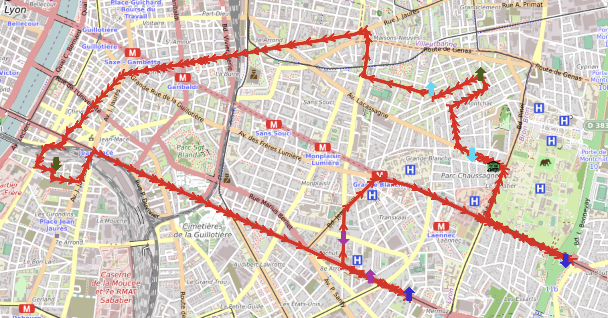
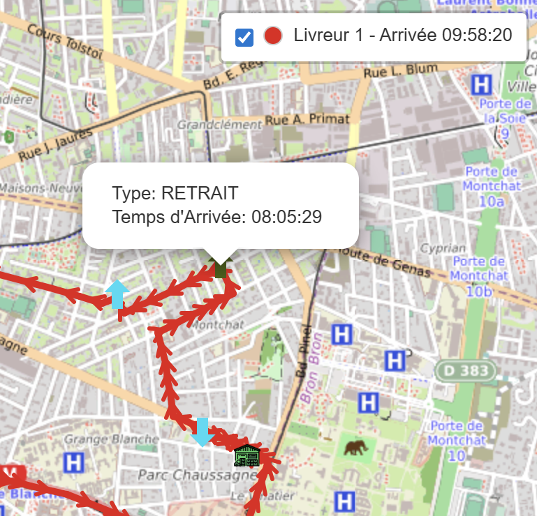
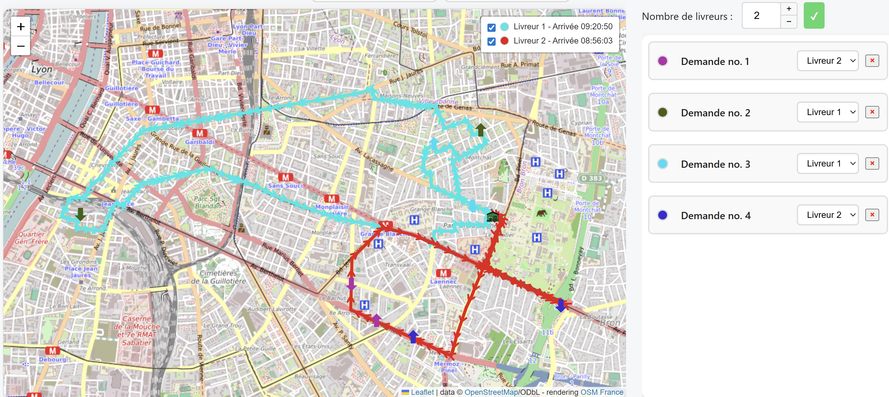
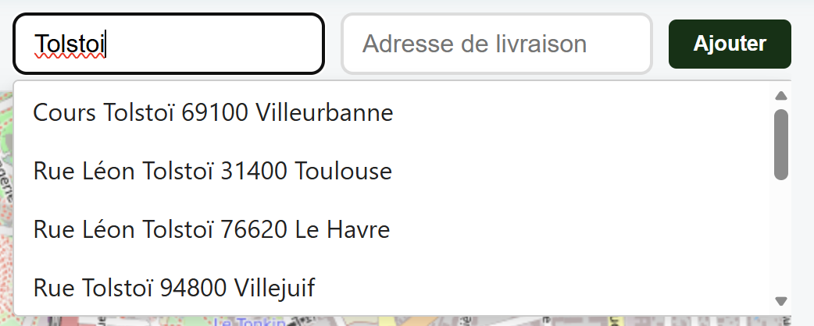
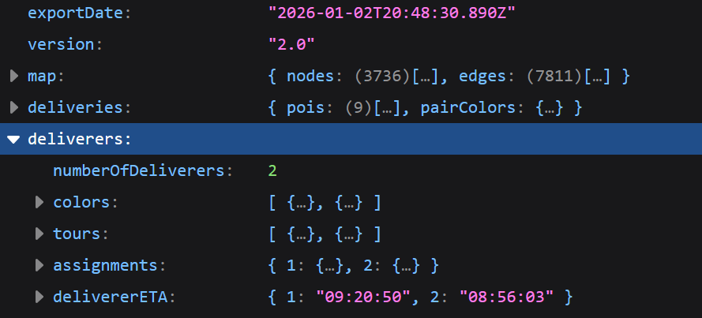

TourMinators
Web application to help delivery companies to plan their routes, with the frontend in HTML, CSS and JavaScript and the backend Java. It has been developed following Agile method.

This software helps planning pickups and deliveries tour in a chosen city. The deliverer must go through each pickup before it's delivery, and it's sometimes difficult to find the best layout for delivery tour. We used Traveling salesman and Dijstra's algorithms to help our client !
The application also comptes arrival times at each point of pickup and delivery, as well as the time at wich the deliverer finishes his tour. This way, delivery company can inform it's clients with the time of arrival, and make sure it's deliverers finish their tour within their working hours.


The delivery company employ several deliverers, thus we implemented this feature. For now, each order is manually adressed to one deliverer.
The user can also manually add a pair of point (pickup and delivery) to be added to the tour...


...and export the tour as a Json file !
Of course this has been done in a limited amount of time and it can still be improved : auto-assignment of orders to optimal deliverer, allowing undo-redo last action directly from the navigator, PDF generation of roadmap for each deliverer, or even a mobile app to guide them !
We tested our code using automated Java unit tests and controlled test coverage with Jacoco :)